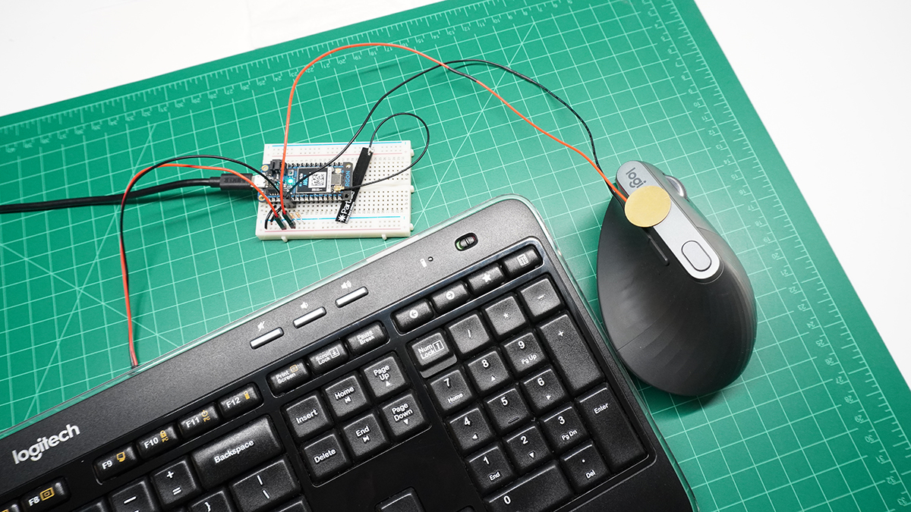

Project 3: Published Sensor System
For the third project, we are publishing our Particle board results to an API. We are able to monitor it through ThingSpeak IoT with the ultimate goal of using p5.js to read the data and "do something visual" with it.
I chose to measure the interactions I have with my keyboard and mouse. I began by measuring the outputs created by attaching a piezo to my keyboard and a force resistor to my mouse's left banner. The issue I was facing was that the force resistor peaked way too easily. To adjust for this, I simply replaced that with another piezo, attached on the top of my mouse to capture vibrations from clicking.

Getting a proper readout from each piezo was another challenge. As I console.logged the incoming data, I was seeing that the 1000ms publishing rate was spotty at best, meaning I would have to be clicking my mouse or typing on my keyboard at the exact moment the data was published. I banged my head for a while staring at the wrong end of the data, and trying to write the sketch to work it out. I ended up playing with the console IDE for the Particle board to do some math before publishing. Rather than using delay(), I leaned on millis() to do some work for me in the loop(). I would total up all of the readings over one second (1000ms), average them, and send that data as my reference. Meaning any second where there was some sort of activity in either sensor should increase the average above a certain threshold. Eureka! I was getting somewhere.


I admittedly decided against a traditional time-based "this is keyboard/this is mouse" display. Instead, I wanted to "paint a picture" of my use over a given time. The first iterations of my sketch would populate the screen with random semi transparent dots, magenta for the mouse and cyan for the keyboard. To give them a bit more "life", I programmed them to wiggle around.
Going into my third iteration, I decided I wanted something a bit more dynamic than just circles on a canvas (which kind of just look like bubbles). I set out to create a randomized "brush" to represent these readings. This iteration introduced "particles" which would roam the canvas with zero opacity until a data point above a set threshold would assign them to show at 10%. In response to class feedback, I gave each data set a different shape in addition to the color. Keyboard activity is represented by cyan rectangles and mouse activity, magenta ellipses.
I limited the canvas to 1080x1080 rather than setting to window height and width. This would give me more consistent final pieces to represent together since I don't always have the browser window set to a fixed dimension when accessing the index.
A lot of time was spent mapping and remapping the scales of the particles. Too little and the overall compositions were a bit uneventful. Too large and they consumed the canvas almost immediately. The more intense the vibrations, the higher the readout, the larger the particle. Simple enough! Once I figured out my scaling, I set out to measure the interactions over long periods of time.


As shown, the compositions were unique and very telling. Like the previous bubbles sketches, there is a noticeable difference between the amount of keyboard and mouse activity on any given day, with some days more focused on the keyboard (like typing out this documentation) or days where there was far more mouse clicking (such as working on Motion Design 1 homework on After Effects). This was an entertaining study in how we can produce beautiful artwork by simply going about our business through the day.